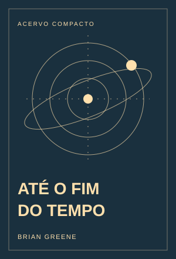

Até o Fim do Tempo
Brian Greene reconstrói uma viagem do Universo primordial ao futuro remoto, perguntando como as leis da física permitiram o surgimento de estruturas, vida e consciência. A entropia funciona como fio condutor para relacionar a direção do tempo, o nascimento de estrelas e a transformação da matéria.
A leitura explora origem da vida, mente, linguagem, religião, arte e nossa necessidade de permanência. Examina também o que a ciência realmente pode afirmar sobre o destino cósmico e por que uma existência finita não precisa ser uma existência sem valor.